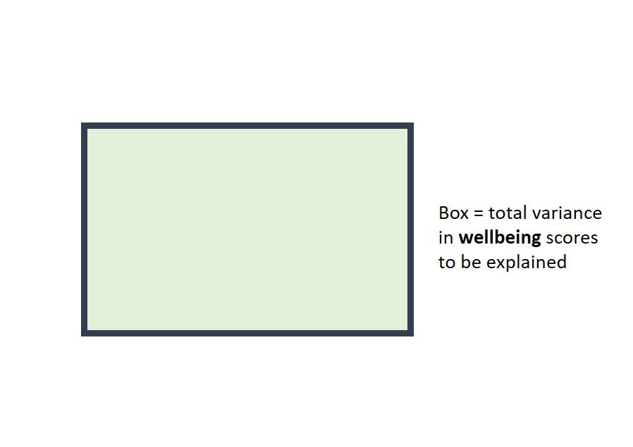
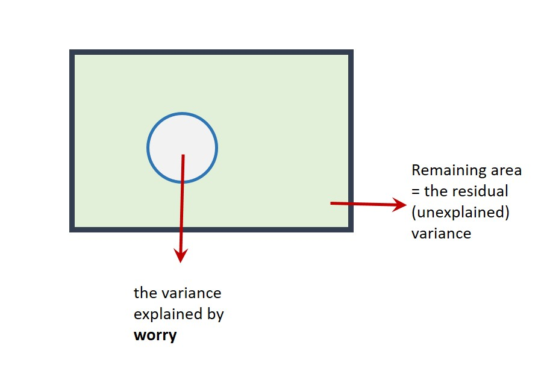

Session 2 Multiple regression: multiple continuous predictors
Chris Berry
2022
2.1 Overview
- Slides from the lecture part of the session: Download
This worksheet assumes you have gone through the previous one on simple regression.
When we want to determine the extent to which an outcome variable (e.g., psychological wellbeing) is predicted by multiple continuous predictors (e.g., both worry and mindfulness scores), we can use multiple regression.
Adding multiple predictors to a model may serve to improve the prediction of the outcome variable. It can also be a way to test specific theories or hypotheses.
Simple vs. Multiple Regression
Simple regression is a linear model of the relationship between one outcome variable and one predictor variable. For example, can we predict wellbeing on the basis of worry scores?
Multiple regression is a linear model of the relationship between one outcome variable and more than one predictor variable. For example, can we predict wellbeing based on worry, mindfulness, and emotional intelligence scores?
2.2 Worked example
Iani et al. (2019) looked at factors associated with psychological wellbeing and distress in 66 individuals with generalised anxiety disorder. For educational purposes, we'll focus on a subset of their data, namely whether wellbeing is predicted by worry and describing scores in a multiple regression. Describing is the mindfulness skill of being able to describe one's inner experiences and feelings with words.
Read the data to R. The data are stored at:
https://raw.githubusercontent.com/chrisjberry/Teaching/master/2_wellbeing_data.csv
# First ensure tidyverse is loaded, i.e., 'library(tidyverse)'
# read in the data using read_csv(), store in wellbeing_data
wellbeing_data <- read_csv('https://raw.githubusercontent.com/chrisjberry/Teaching/master/2_wellbeing_data.csv')# preview the data with glimpse()
wellbeing_data %>% glimpse() We'll use these three variables in the dataset:
wellbeing: Higher scores indicate higher wellbeing.worry: Higher scores indicate higher levels of worry.describing: Higher scores indicate higher self-reported ability to describe one's inner experiences.
(Note. The data are publicly available, but I've changed the variable names for clarity. As in Iani et al. (2019), missing values were replaced with the mean of the relevant variable.)
Visualise the data with a scatterplot. Place the outcome variable wellbeing on the y-axis, the predictor worry on the x-axis, and let the size of each point represent the second predictor, the describing score:
# Scatterplot of all three variables
# Use alpha to alter transparency of points
# to make overlap easier to see
wellbeing_data %>%
ggplot(aes(x = worry, y = wellbeing, size = describing)) +
geom_point(alpha = 0.6, colour = "cornflowerblue")Figure 2.1: Scatterplot of wellbeing scores vs. worry and describing
Exercise 2.1 From inspection of the scatterplot:
- Greater
worryscores tend to be associated withwellbeingscores.
A negative trend between worry and wellbeing is evident in the scatterplot
- Greater
describingscores tend to be associated withwellbeingscores.
The size of the describing points tend to be larger when wellbeing scores are higher.
The above trends are also apparent in the Pearson correlations between variables:
# select the relevant columns from wellbeing_data and
# use correlate() to obtain the correlations
wellbeing_data %>%
select(wellbeing, worry, describing) %>%
correlate(method = "pearson")| term | wellbeing | worry | describing |
|---|---|---|---|
| wellbeing | NA | -0.5419352 | 0.5356548 |
| worry | -0.5419352 | NA | -0.2477970 |
| describing | 0.5356548 | -0.2477970 | NA |
- The correlation between
wellbeingandworry(to 2 decimal places) is r = - The correlation between
wellbeinganddescribing(to 2 decimal places) is r = - The correlation between the two predictors (
worryanddescribing) (to 2 decimal places) is r =
Multiple regression using lm()
To include more than one predictor in a regression model, use the + symbol when specifying the model with lm():
lm(outcome ~ predictor_1 + predictor_2 + predictor_3.... , data = mydata)
This runs a model of the form:
\(Predicted \ outcome = a + b_1(Predictor \ 1) + b_2(Predictor \ 2) + b_3(Predictor \ 3) ...\)
Note that we don't need to specify the intercept a in lm() since it is included automatically by R (as is the case with simple regression).
# conduct a multiple regression, store it in multiple1
multiple1 <- lm(wellbeing ~ worry + describing, data = wellbeing_data)
# look at the coefficients
multiple1##
## Call:
## lm(formula = wellbeing ~ worry + describing, data = wellbeing_data)
##
## Coefficients:
## (Intercept) worry describing
## 70.7306 -0.7708 1.2484(Intercept)is the value of the intercept a in the regression equation. Type to two decimal places:worryis the value of the coefficient \(b_1\) for theworrypredictor.describingis the value of the coefficient \(b_2\) for thedescribingpredictor.
The regression equation is therefore written as:
\(Predicted\ wellbeing = 70.73 - 0.77(worry) + 1.25(describing)\)
2.2.1 Residual plot
We can obtain a plot of the predicted values vs. the residuals in the same way as for simple regression by using augment() in the broom package.
augment(multiple1) %>%
ggplot(aes(x = .fitted, y = .resid)) +
geom_hline(yintercept = 0) +
geom_point()
Figure 2.2: Scatterplot of the predicted values vs. residuals
The points seem randomly and evenly distributed around the horizontal, in line with assumptions of homoscedasticity (equal variance of residuals at each predicted value), and independence of residuals.
2.2.2 Evaluating the model: Bayes Factor
The Bayes Factor tells us how many more times likely the multiple regression model is, relative to the intercept-only model.
Use lmBF() to obtain the Bayes Factor for the multiple regression model:
# store the BF for the model in multiple1_BF
multiple1_BF <- lmBF(wellbeing ~ worry + describing, data = data.frame(wellbeing_data))
# show the BF
multiple1_BF## Bayes factor analysis
## --------------
## [1] worry + describing : 4190994 ±0%
##
## Against denominator:
## Intercept only
## ---
## Bayes factor type: BFlinearModel, JZSThe Bayes Factor for the model is . This tells us that the model with worry and describing is over four million times more likely than an Intercept only model (one with no predictors). Thus, there's strong evidence that the multiple regression model explains wellbeing.
2.2.3 Evaluating the model: R2
R2 tells us how much variance in the outcome variable is explained by the multiple regression model.
Use glance() in the broom package to obtain the R2 for the model:
glance(multiple1)| r.squared | adj.r.squared | sigma | statistic | p.value | df | logLik | AIC | BIC | deviance | df.residual | nobs |
|---|---|---|---|---|---|---|---|---|---|---|---|
| 0.4653263 | 0.4483526 | 9.393314 | 27.41444 | 0 | 2 | -239.9547 | 487.9093 | 496.6679 | 5558.763 | 63 | 66 |
r.squaredis R2, the proportion of variance inwellbeingexplained by the model. Thus, the model explains 0.4653, or 46.53% of the variance inwellbeing.adj.r.squaredis the Adjusted R2 value, which is R2 adjusted for the sample size and the number of predictors in the model. It is an estimate of R2 for the population (not merely the scores we have in the sample), and is always less than R2. You'll see researchers reporting either R2 or the adjusted R2 in the literature. If you're not sure which one to use, report the adjusted R2, and say so (e.g., "adjusted R2 = 44.83%").
The adjusted R2 value is 0.4483, so in a report we could say that a model with worry and describing explains 44.83% of the variance in wellbeing.
2.3 Understanding the contribution of individual predictors
Because predictor variables are often correlated to a degree, some of the variance they explain in the outcome will be shared. A predictor's contribution to a model must therefore only be interpreted after the other predictors in the model have been taken into account. This is explained in more detail below.
2.3.1 R2 in simple vs. multiple regression
In a simple regression of wellbeing ~ worry, the variance in wellbeing explained by worry is R2 = 29.37%:
s1 <- lm(wellbeing ~ worry, data = wellbeing_data)
glance(s1)| r.squared | adj.r.squared | sigma | statistic | p.value | df | logLik | AIC | BIC | deviance | df.residual | nobs |
|---|---|---|---|---|---|---|---|---|---|---|---|
| 0.2936938 | 0.2826578 | 10.71152 | 26.61226 | 2.6e-06 | 1 | -249.1416 | 504.2832 | 510.8522 | 7343.15 | 64 | 66 |
In a simple regression of wellbeing ~ describing, the variance in wellbeing explained by describing is R2 = 28.69%
s2 <- lm(wellbeing ~ describing, data = wellbeing_data)
glance(s2)| r.squared | adj.r.squared | sigma | statistic | p.value | df | logLik | AIC | BIC | deviance | df.residual | nobs |
|---|---|---|---|---|---|---|---|---|---|---|---|
| 0.286926 | 0.2757842 | 10.76272 | 25.75226 | 3.6e-06 | 1 | -249.4563 | 504.9126 | 511.4816 | 7413.512 | 64 | 66 |
So, by looking at the (non-adjusted) R2 values of our simple and multiple regressions so far, an interesting pattern is evident:
In the simple regression of
wellbeing ~ worry, R2 = 29.37%In the simple regression of
wellbeing ~ describing, R2 = 28.69%Yet, in a multiple regression of
wellbeing ~ worry + describing, R2 = 46.56%, which is less than the sum of R2 from the simple regressions (29.37 + 28.69 = 58.06%).
The reason why the R2 values from the simple regressions don't add up to the same value as the R2 for the multiple regression is because worry and describing are correlated (r = -0.25, as you obtained earlier). This means that some of the variance that they explain in wellbeing is shared.
2.3.2 Venn Diagrams
Venn diagrams are useful for understanding the variance that predictors explain in the outcome variable. They are especially useful for understanding R2 in multiple regression. Here, I use them to explain why the R2 values from simple regressions don't necessarily add up to R2 when the same predictors are in a multiple regression.
Suppose the rectangle below represents all of the variance in wellbeing to be explained.

The area of the circle below represents the variance in wellbeing explained by worry in the first simple regression. If this diagram were drawn to scale (it's not!), the area of the circle would be equal to the value of \(R^2\) (i.e., 29.37%).

The part of the rectangle not inside the circle represents the variance in wellbeing that is not explained by the model (i.e., the unexplained or residual variance).
We'll now add describing to the model with worry. We could represent this on a Venn diagram as follows:

The correlation is represented as an overlap in the circles. Their total area (R2 for the multiple regression model = 46.56%) is less than the area they'd explain if there were no overlap (58.06%).
This highlights an important point: Predictors are often correlated to some degree, so in multiple regression it only really makes sense to talk about the contribution a predictor makes in the context of the other predictors in the model. That is, a given predictor explains variance in the outcome variable only after the other predictors in the model have been taken into account.
Given that the unique contributions of worry and describing are lower in a multiple regression model, we must ask whether there's evidence that each predictor makes a unique contribution, over an above the other predictor. For example, is there sufficient evidence for a unique contribution of worry, once describing has been taken into account? If not, we probably wouldn't include it in the model.
2.3.3 Using Bayes factors to assess the unique contribution of predictors
We can compare Bayes Factors to determine whether a given predictor in a multiple regression model makes a unique contribution to the prediction of the outcome variable.
First, obtain the Bayes Factor for the model in which predictor_1 has been left out of the full model. Then obtain the Bayes Factor for model in which predictor_2 has been left out of the model. Repeat this for as many predictors you have in the model.
In our example, this involves obtaining the BFs of the model of wellbeing ~ describing, and the BF of the model of wellbeing ~ worry:
# BF for wellbeing ~ describing
describing_BF <- lmBF(wellbeing ~ describing, data = data.frame(wellbeing_data))
# BF for wellbeing ~ worry
worry_BF <- lmBF(wellbeing ~ worry, data = data.frame(wellbeing_data))We also need the BF for the full model:
# BF for wellbeing ~ worry + describing
# (this is the same as multiple1_BF above, but
# with a different name, which will help us see what's going on later)
worry_describing_BF <- lmBF(wellbeing ~ worry + describing, data = data.frame(wellbeing_data))
Comparing models
We can use the following general formula to determine whether there's evidence for a more complex version of a model, relative to a simpler model:
BF_more_complex_model / BF_simpler_model
That is, we divide the BF for the more complex model by the BF for the simpler one. This then tells us how many more times more likely the more complex model is, relative to the simpler one.
For example, if BF_more_complex_model = 10 and BF_simpler_model = 2, then the more complex model is five times more likely than the simpler one (because 10 / 2 = 5). There'd be substantial evidence to prefer the more complex model.
In our case, we can compare Bayes Factor of the full model (worry_describing_BF) with that of our simpler models (describing_BF) and (worry_BF) in order to determine whether each predictor makes a unique contribution to the full model or not.
To determine if there's evidence for the unique contribution of worry to the model:
# compare BFs for the full model and one in which worry is left out
worry_describing_BF / describing_BF## Bayes factor analysis
## --------------
## [1] worry + describing : 981.4912 ±0%
##
## Against denominator:
## wellbeing ~ describing
## ---
## Bayes factor type: BFlinearModel, JZSThe BF for the comparison is 981.49, indicating that there's substantial evidence that the addition of worry to a model containing describing improves the model. In other words, there's evidence for a unique contribution of worry to the prediction of wellbeing.
To determine if there's evidence for the unique contribution of describing to the model:
# compare the BFs for the full model and one in which describing is left out
worry_describing_BF / worry_BF## Bayes factor analysis
## --------------
## [1] worry + describing : 738.4095 ±0%
##
## Against denominator:
## wellbeing ~ worry
## ---
## Bayes factor type: BFlinearModel, JZSThe BF comparing the full model with one containing worry alone is 738.41. This indicates that the model with both worry and describing is over seven hundred times more likely than the model with worry alone. The BF is greater than 3, so this indicates substantial evidence for the unique contribution of describing to the prediction of wellbeing.
Thus, in a multiple regression model, there's substantial evidence that both worry and describing predict wellbeing overall (BF = 4,190,994). There's also substantial evidence that worry (BF = 981.49) and describing (BF = 738.41) make unique contributions to this model. The model with both predictors included therefore seems justified.
2.4 Multicollinearity
If the correlation between predictors is very high (greater than r = 0.8 or less than -0.8), this is known as multicollinearity.
Multicollinearity can be a problem in multiple regression. Predictors may explain a large amount of variance in the outcome variable, but their 'unique' contribution in a multiple regression may be small. In an extreme scenario, neither predictor makes a unique contribution, even though the overall regression explains a large amount of variance in the outcome variable! On a Venn diagram, the circles representing the predictors would almost completely overlap:

Multicollinearity should be avoided. Therefore, check for extreme correlations between your predictor variables before including them in a multiple regression.
The correlation between the predictor variables in the model of wellbeing ~ worry + describing was , and multicollinearity was therefore .
How many predictor variables should be included in a model?
If adding predictors to the regression improves the prediction of the outcome variable, you may think that we can simply keep adding in variables to the model, until all the residual variance has been explained. This seems fine until we learn that if we were to add as many predictors to the model as there are rows in our data (e.g., 66 participants inwellbeing_data), then we'd perfectly predict the outcome variable, and have a (non-adjusted) \(R^2\) of 100%! This would be true even if the predictors consisted of random values. Our model would clearly be meaningless though.
We ideally want to explain the outcome variable with relatively few predictors, or for our selection of predictors to be guided by specific hypotheses or theory.
2.5 Exercise
Exercise 2.2 Main Exercise
The wellbeing_data also contain these columns:
gad: Severity of symptoms of GAD (Generalised Anxiety Disorder). Higher scores indicate greater severity of symptoms.brooding: Higher scores indicate higher levels of brooding (i.e., being preoccupied with depressing, morbid, or painful memories or thoughts).observing: Higher scores indicate greater tendency to notice things in one's environment (e.g., smells, sounds, visual elements). It's another measure of mindfulness.
Use multiple regression to investigate the extent to which brooding and observing predict gad. Adapt the code in this worksheet to do the following things (and try not to look at the solution until you've attempted the question):
1. Visualise the relationship between gad, brooding and observing in a scatterplot.
Pipe wellbeing_data to ggplot() and use geom_point(). Use the size option to specify the second predictor variable in aes()
wellbeing_data %>%
ggplot(aes(x = brooding, y = gad, size = observing)) +
geom_point() +
xlab("Brooding") +
ylab("GAD severity of symptoms score") +
theme_classic()
Figure 2.3: GAD vs. brooding and observing scores
In the scatterplot, observing could have also been swapped around with brooding. Try both ways.
- Greater
broodingscores tend to be associated withgadscores. - Greater
observingscores tend to be associated withgadscores.
2. Obtain the correlations between gad, brooding, and observing
Pipe the wellbeing_data to select() and use correlate()
wellbeing_data %>%
select(gad, brooding, observing) %>%
correlate(method = "pearson")State the correlations to two decimal places:
- The correlation between the GAD score and brooding is r =
- The correlation between the GAD score and observing is r =
- The correlation between brooding and observing is r =
Is multicollinearity a concern between the two predictor variables?
The correlation between the predictor variables is r = -.18. Although they are weakly correlated, this does not exceed r = -.80, and therefore multicolinearity is not a concern.
3. Conduct a multiple regression, with gad as the outcome variable, and brooding and observing as the predictor variables
Use lm() to specify the simple regression. Store it in multiple2.
multiple2 <- lm(gad ~ brooding + observing, data = wellbeing_data)
multiple2What is the value of the intercept a (to two decimal places)?
What is the value of the coefficient for brooding (to two decimal places)?
What is the value of the coefficient for observing (to two decimal places)?
What is the regression equation?
4. Obtain R2 for the model
Make sure you have stored the regression results (e.g., in mutliple2), then use glance() with that variable.
glance(multiple2)What proportion of variance in the GAD score is explained by the model containing brooding and observing? (Report the adjusted R-squared value as a proportion, to two decimal places)
Report the value of adjusted R-squared as a percentage, to two decimal places: The adjusted R2 value is equal to %
5. Obtain the Bayes Factor for the model
Use lmBF() to specify the multiple regression model
multiple2_BF <- lmBF(gad ~ brooding + observing, data = data.frame(wellbeing_data))How many times more likely is the model with brooding and observing as a predictor of gad, compared to an intercept-only model? (to two decimal places)
6. Plot the predicted values against the residuals.
Use augment() with ggplot() and geom_point()
augment(multiple2) %>%
ggplot(aes(x = .fitted, y = .resid)) +
geom_point() +
geom_hline(yintercept = 0)What type of trend is evident between the predicted values and the residuals
Although there's a slight negative association for lower predicted values, the assumptions of homoscedasticity and independence of residuals appear to be met. You could also try adding the code + geom_smooth(method = "lm", se = FALSE) to your plot to see what the (linear) trend line would actually be.
7. Using lmBF(), determine whether there's evidence for a unique contribution of brooding and observing to prediction of gad
The BF associated with the unique contribution of
observingisThe BF associated with the unique contribution of
broodingis
- Use
lmBF()to obtain the BF for both simple regressions and the multiple regression. - Then use the general formula
BF_more_complex_model / BF_simpler_modelto obtain the BF for the unique contribution of each predictor.
To get the BF for the two simple regressions:
BF_brooding <- lmBF(gad ~ brooding, data = data.frame(wellbeing_data))
BF_observing <- lmBF(gad ~ observing, data = data.frame(wellbeing_data))
The multiple regression BF (same as multiple2_BF):
BF_brooding_observing <- lmBF(gad ~ brooding + observing, data = data.frame(wellbeing_data))
Then the BFs for relevant models need to be compared, using:
BF_more_complex_model / BF_simpler_model
# BF for gad ~ brooding
BF_brooding <- lmBF(gad ~ brooding, data = data.frame(wellbeing_data))
# BF for gad ~ observing
BF_observing <- lmBF(gad ~ observing, data = data.frame(wellbeing_data))
# BF for full model
BF_brooding_observing <- lmBF(gad ~ brooding + observing, data = data.frame(wellbeing_data))
# BF for the unique contribution of observing
BF_brooding_observing / BF_brooding
# BF for the unique contribution of brooding
BF_brooding_observing / BF_observing
8. On balance, is there evidence for a model containing both brooding and observing as predictors of GAD scores?
Look at BF for the unique contributions. If the BF is greater than 3, this indicates substantial evidence for the inclusion of that predictor in the model. If the BF is less than 0.33, then there's substantial evidence against its inclusion (the simpler model is preferable). Intermediate BFs are inconclusive, and the predictor should therefore be left out.
Together, brooding and observing explain 34.50% of the variance in GAD scores (adjusted R2), and there was strong evidence for this model, compared to an intercept only model, BF = 26889.69. There was, however, no evidence for a unique contribution of observing to the model (BF = 0.19), but there was substantial evidence for a unique contribution of brooding to the model, BF = 741841.28, whereby greater GAD scores were associated with higher brooding scores. In the interest of parsimony (not making models more complex than they need to be), the results suggest that only brooding predicts GAD and observing should not be included in the model that also contains brooding.
2.6 Further exercises
Not essential. For those confident with everything.
2.6.1 regressionBF()
When determining the BF for the unique contribution of a predictor, as a shortcut, we could have used regressionBF(), rather than using lmBF() multiple times. regressionBF() automatically calculates the BFs for all permutations of a set of predictors in a model.
For our first model of wellbeing on the basis of worry and describing:
# obtain BFs for all permutations of the model predictors
all_BFs <- regressionBF(wellbeing ~ worry + describing, data = data.frame(wellbeing_data))
# look at the BFs
all_BFs## Bayes factor analysis
## --------------
## [1] worry : 5675.703 ±0%
## [2] describing : 4270.027 ±0%
## [3] worry + describing : 4190994 ±0%
##
## Against denominator:
## Intercept only
## ---
## Bayes factor type: BFlinearModel, JZS- "[1]" is the BF for the model with
worryas the sole predictor ofwellbeing - "[2]" is the BF for the model with
describingas the sole predictor ofwellbeing - "[3]" is the BF for the model with
worryanddescribingas predictors
Comparing the BF for [3] and [2] will tell us whether there's evidence that worry makes a unique contribution.
# compare multiple regression with simple regression 2
all_BFs[3] / all_BFs[2]## Bayes factor analysis
## --------------
## [1] worry + describing : 981.4912 ±0%
##
## Against denominator:
## wellbeing ~ describing
## ---
## Bayes factor type: BFlinearModel, JZSThe BF for this comparison is 981.49, which matches the BF for the unique contribution of describing calculated earlier.
Comparing the BF for [3] and [1] will therefore tell us whether there's evidence that describing makes a unique contribution to the model:
# compare the BF for [3] and [1]
all_BFs[3] / all_BFs[1]## Bayes factor analysis
## --------------
## [1] worry + describing : 738.4095 ±0%
##
## Against denominator:
## wellbeing ~ worry
## ---
## Bayes factor type: BFlinearModel, JZSThe BF for this comparison is 738.41, which matches the BF for the unique contribution of describing calculated earlier.
Thus, the BFs derived by this method are the same as when we used lmBF() in the main section of the worksheet.
Exercise 2.3 Further exercise 1
Use regressionBF() to obtain the BFs for the unique contribution of brooding and observation in the model in the Main Exercise (i.e., gad ~ brooding + observation), and check that they are the same as the ones produced when you used lmBF()
2.6.2 Predicting new data
As with simple regression, we can use augment() to predict what the outcome variable would be, given new data. For example, for a new individual with a worry score of 20 and describing score of 15:
# specify the new data (for each predictor in the model)
new_scores <- tibble(worry = 20,
describing = 15)
# use augment() in the broom package to obtain the prediction
library(broom)
augment(multiple1, newdata = new_scores)| worry | describing | .fitted |
|---|---|---|
| 20 | 15 | 74.03992 |
.fitted contains the predicted wellbeing score, and is equal to 74.04.
To derive predictions for several new participants, use c(score1, score2...) when specifying the new_scores. To add another individual with a worry score of 25 and describing score of 10
# specify the new data (for both predictors)
new_scores <- tibble(worry = c(20, 25),
describing = c(15, 10))
# use augment() in the broom package for the predictions
augment(multiple1, newdata = new_scores)| worry | describing | .fitted |
|---|---|---|
| 20 | 15 | 74.03992 |
| 25 | 10 | 63.94410 |
Each row contains the details for a new person. The .fitted column contains the predicted wellbeing scores: 74.04 and 63.94.
Exercise 2.4 Predicting data
For the model in the main exercise (i.e., gad ~ brooding + observing), what are the predicted values of gad for three new individuals with brooding scores of 10, 15, and 20, and observing scores of 3, 6 and 9, respectively.
- Predicted GAD of participant 1 (to one decimal place) =
- Predicted GAD of participant 2 (to one decimal place) =
- Predicted GAD of participant 3 (to one decimal place) =
new_scores <- tibble(brooding = c(10, 15, 20),
observing = c(3, 6, 9))
multiple2 <- lm(gad ~ brooding + observing, data = wellbeing_data)
augment(multiple2, newdata = new_scores)
Exercise 2.5 Further exercise
Not essential. Only for if you are really confident with everything.
The variables attention, clarity and repair in the wellbeing_data are measures of emotional intelligence. To what extent do these three predictors uniquely explain wellbeing in a multiple regression?
- The BF for the unique contribution of
attention= - The BF for the unique contribution of
clarity= - The BF for the unique contribution of
repair=
Obtain the BF for the full model and the BFs for the models in which each of the predictors have been left out. Compare the BF for the full model with that of the model with the predictor left out in order to obtain the BF for the unique contribution of that predictor.
Check correlations:
wellbeing_data %>%
select(wellbeing, attention, clarity, repair) %>%
correlate(method = "pearson")##
## Correlation method: 'pearson'
## Missing treated using: 'pairwise.complete.obs'| term | wellbeing | attention | clarity | repair |
|---|---|---|---|---|
| wellbeing | NA | -0.3162625 | 0.3755731 | 0.5002038 |
| attention | -0.3162625 | NA | 0.1560582 | 0.0216476 |
| clarity | 0.3755731 | 0.1560582 | NA | 0.4078774 |
| repair | 0.5002038 | 0.0216476 | 0.4078774 | NA |
Run multiple regression:
multiple3 <- lm(wellbeing ~ attention + clarity + repair, data = wellbeing_data)
Adjusted R2 for the overall model:
glance( multiple3 )| r.squared | adj.r.squared | sigma | statistic | p.value | df | logLik | AIC | BIC | deviance | df.residual | nobs |
|---|---|---|---|---|---|---|---|---|---|---|---|
| 0.4167062 | 0.3884823 | 9.889914 | 14.76431 | 2e-07 | 3 | -242.8268 | 495.6536 | 506.6019 | 6064.245 | 62 | 66 |
Using lmBF():
BF_attention_clarity_repair <-
lmBF(wellbeing ~ attention + clarity + repair, data = data.frame(wellbeing_data))
BF_attention_clarity <-
lmBF(wellbeing ~ attention + clarity, data = data.frame(wellbeing_data))
BF_attention_repair <-
lmBF(wellbeing ~ attention + repair, data = data.frame(wellbeing_data))
BF_clarity_repair <-
lmBF(wellbeing ~ clarity + repair, data = data.frame(wellbeing_data))
# unique contribution of attention
BF_attention_clarity_repair / BF_clarity_repair
# unique contribution of clarity
BF_attention_clarity_repair / BF_attention_repair
# unique contribution of repair
BF_attention_clarity_repair / BF_attention_clarity## Bayes factor analysis
## --------------
## [1] attention + clarity + repair : 81.00941 ±0%
##
## Against denominator:
## wellbeing ~ clarity + repair
## ---
## Bayes factor type: BFlinearModel, JZS
##
## Bayes factor analysis
## --------------
## [1] attention + clarity + repair : 3.836891 ±0%
##
## Against denominator:
## wellbeing ~ attention + repair
## ---
## Bayes factor type: BFlinearModel, JZS
##
## Bayes factor analysis
## --------------
## [1] attention + clarity + repair : 82.35924 ±0%
##
## Against denominator:
## wellbeing ~ attention + clarity
## ---
## Bayes factor type: BFlinearModel, JZS
Using regressionBF():
all_BFs <-
regressionBF(wellbeing ~ attention + clarity + repair, data = data.frame(wellbeing_data))
# look at output
all_BFs
# unique contribution of attention
all_BFs[7] / all_BFs[6]
# unique contribution of clarity
all_BFs[7] / all_BFs[5]
# unique contribution of repair
all_BFs[7] / all_BFs[4]## Bayes factor analysis
## --------------
## [1] attention : 4.759631 ±0%
## [2] clarity : 18.08091 ±0.01%
## [3] repair : 960.1706 ±0%
## [4] attention + clarity : 874.9426 ±0%
## [5] attention + repair : 18780.73 ±0%
## [6] clarity + repair : 889.5214 ±0%
## [7] attention + clarity + repair : 72059.61 ±0%
##
## Against denominator:
## Intercept only
## ---
## Bayes factor type: BFlinearModel, JZS
##
## Bayes factor analysis
## --------------
## [1] attention + clarity + repair : 81.00941 ±0%
##
## Against denominator:
## wellbeing ~ clarity + repair
## ---
## Bayes factor type: BFlinearModel, JZS
##
## Bayes factor analysis
## --------------
## [1] attention + clarity + repair : 3.836891 ±0%
##
## Against denominator:
## wellbeing ~ attention + repair
## ---
## Bayes factor type: BFlinearModel, JZS
##
## Bayes factor analysis
## --------------
## [1] attention + clarity + repair : 82.35924 ±0%
##
## Against denominator:
## wellbeing ~ attention + clarity
## ---
## Bayes factor type: BFlinearModel, JZS
2.7 Summary of key points
Predictors can be added to a model in
lmusing the+symbol- e.g.,
lm(wellbeing ~ worry + describing + predictor_3 + ....)
- e.g.,
Predictor variables are often correlated to some extent. This can affect the interpretation of individual predictor variables. Venn diagrams can help to understand the unique contributions of predictors
In multiple regression, it's important to understand that each predictor makes a contribution to explaining the outcome variable only after taking into account the other predictors in the model.
The Bayes Factor for a multiple regression model tells us how much more likely it is, compared to an intercept-only model.
To know whether there's evidence for the unique contribution of a predictor, we have to compare Bayes Factors for the more complex model (which includes it), versus the simpler model (in which the predictor is left out). i.e.,
BF_more_complex_model / BF_simpler_model.Multicollinearity exists when predictors are highly correlated (r above 0.8 or below -0.8) and should be avoided by dropping one of the predictors.
2.8 References
Iani, L., Quinto, R. M., Lauriola, M., Crosta, M. L., & Pozzi, G. (2019). Psychological well-being and distress in patients with generalized anxiety disorder: The roles of positive and negative functioning. PloS one, 14(11), e0225646. https://doi.org/10.1371/journal.pone.0225646